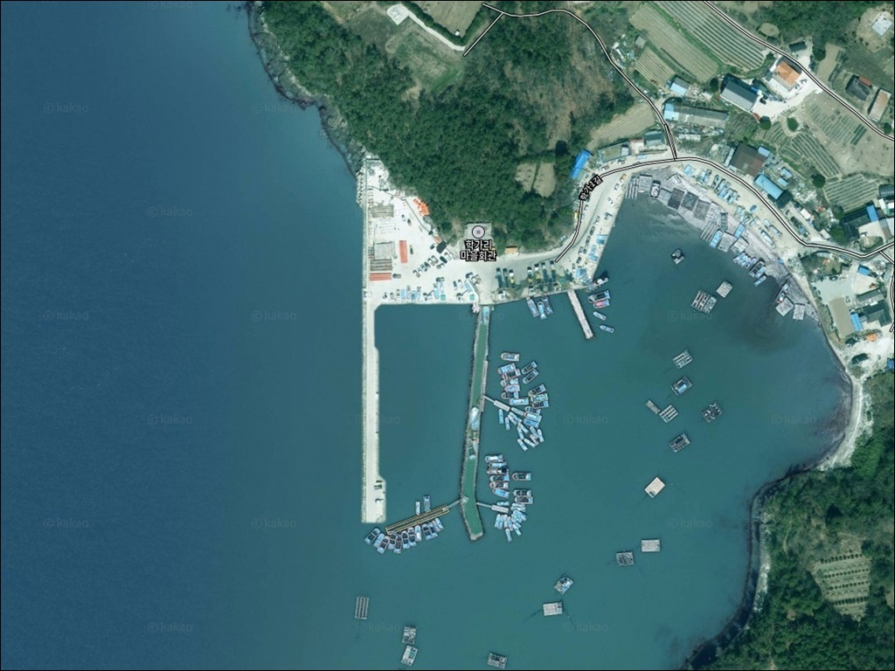
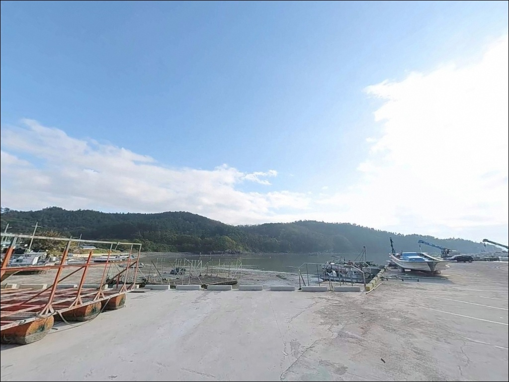
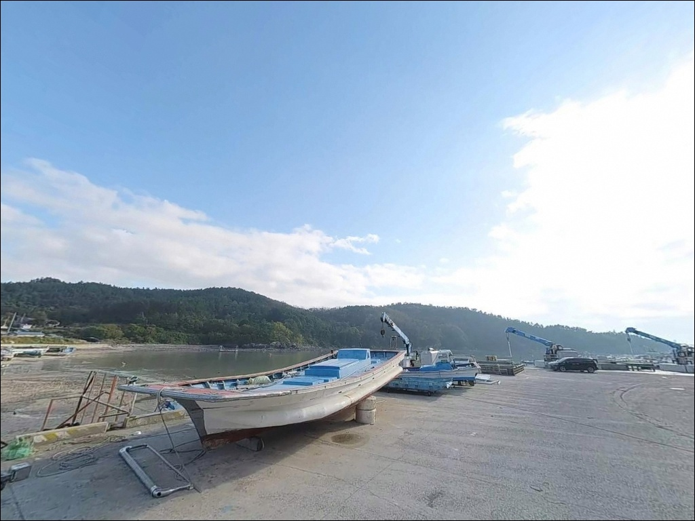
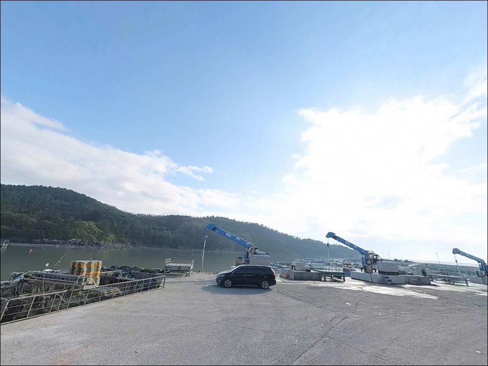
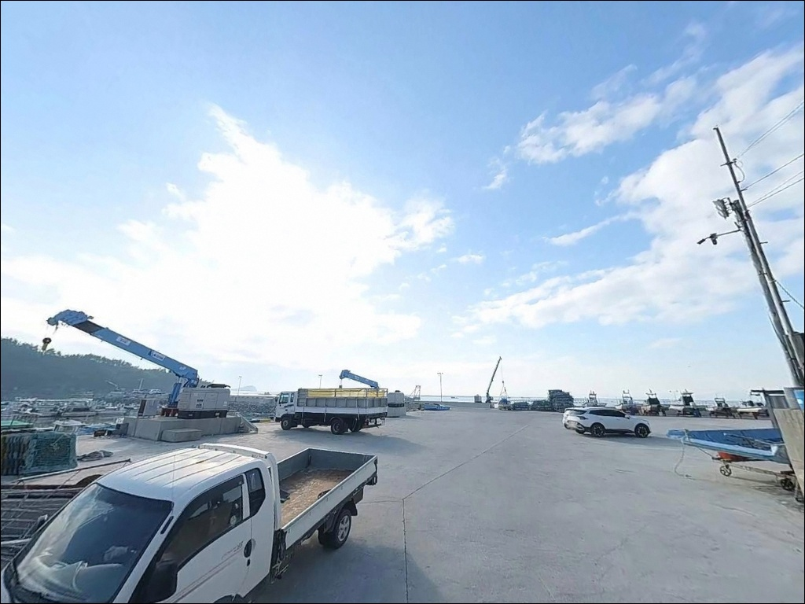
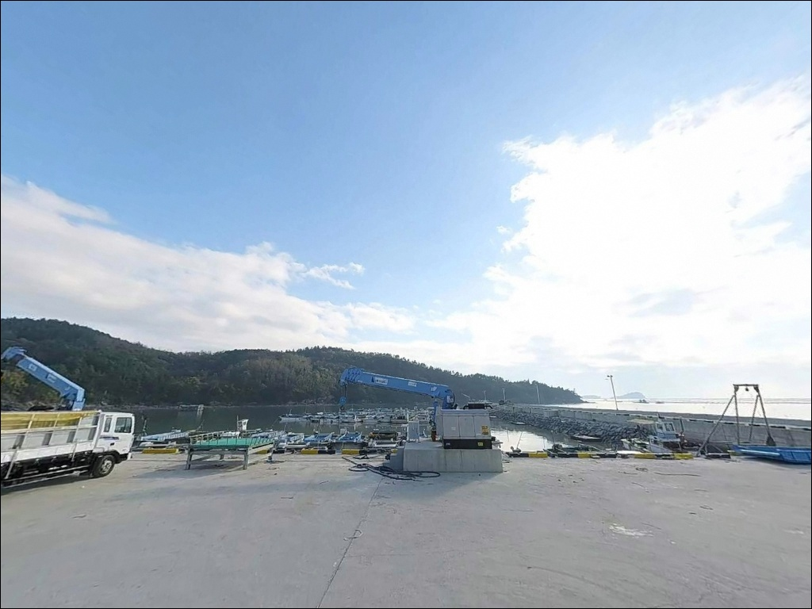
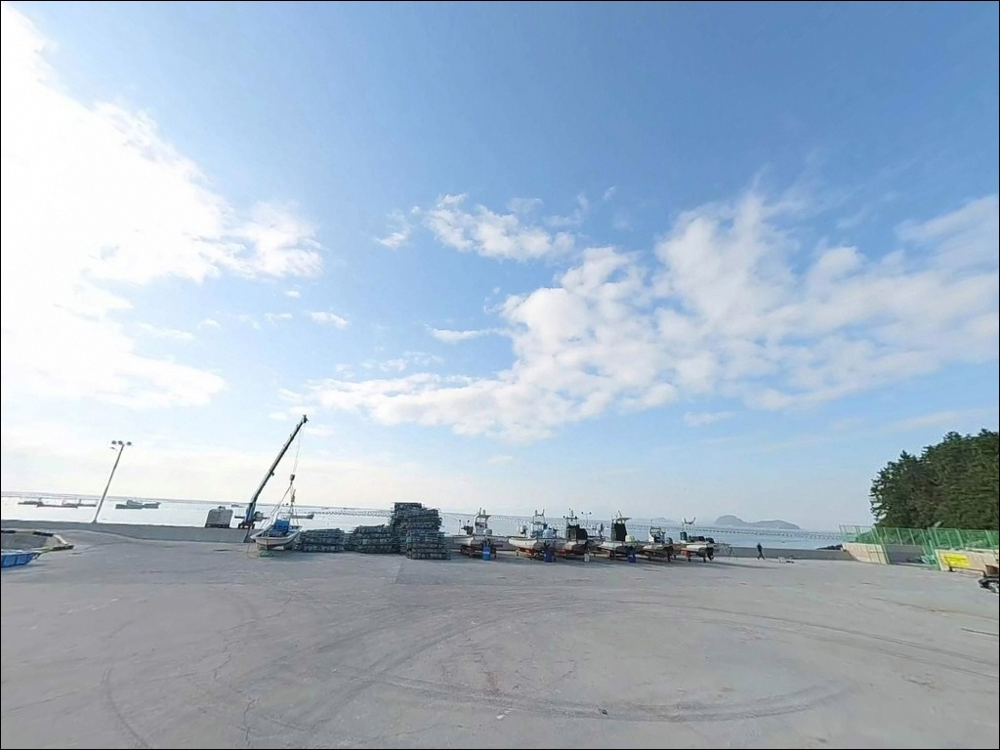
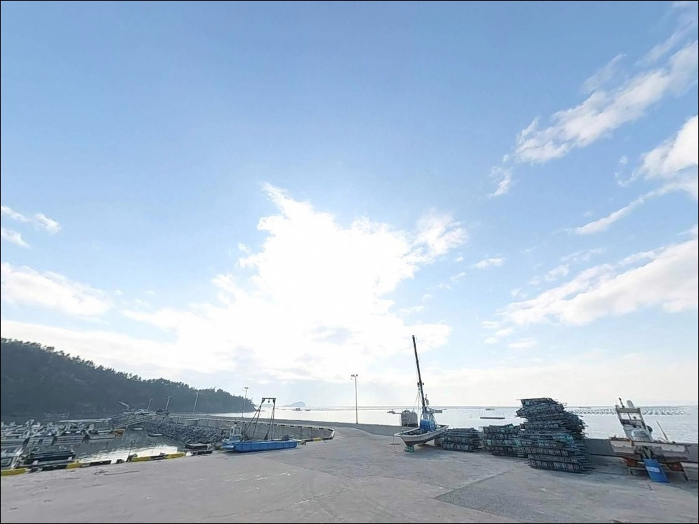
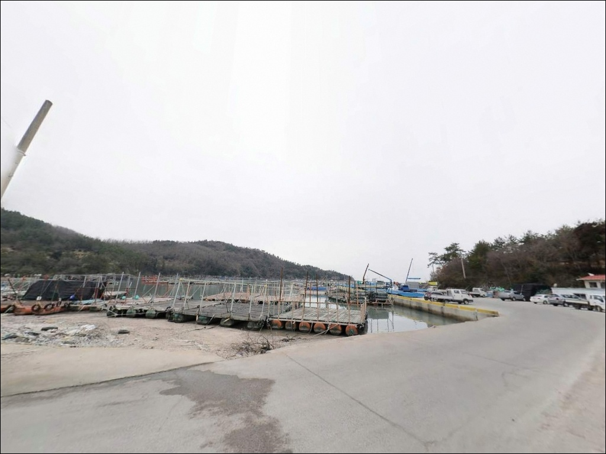

학가항, 전남 해남군 자연의 여백을 느낄 수 있는 차박, 낚시 명소
이 페이지에는 광고(제휴 링크 포함)가 있으며, 광고 링크를 통해 구매하면 운영자가 판매 수익 또는 수수료를 받을 수 있습니다. 포인트 사진: 카카오맵 스카이뷰·로드뷰. 이 페이지의 지도·사진 이미지는 카카오맵의 실제 서비스 이미지와 다를 수 있습니다.


포인트 안내
학가항
전남 해남군 송지면 학가리 571-14
수심이 0.6~1.7m 수준으로 얕은 펄 바닥 지형에서
물때를 맞추지 않고 진입하면
선착장 주변이 갯벌로 드러나
어떤 채비를 써도 낚시 여건이 성립하지 않습니다.
만조 전후 타이밍이 이 포인트의 입장 판단 기준입니다.
학가항은 전남 해남군 송지면 학가리에 자리한
2005년 지정 지방어항입니다.
국도 77호선에서 학가1길로 진입하며,
북방파제와 남방파제가 내항을 보호하는 구조로
갑오징어 에깅 포인트로 현지에서 알려진 곳입니다.
이 글은 학가항의 진입 환경과 지형 조건,
낚시 방식 적합성에 집중합니다.
조황 단정이나 특정 어종 보장은
이 글의 범위에 포함되지 않습니다.

1. 진입 동선과 포인트 접근성
국도 77호선이 학가리 동쪽을 남북으로 지나며,
학가항은 여기서 분기하는 학가1길을 통해 진입합니다.
마을 안길을 거치는 구조라
도로 폭이 좁은 구간이 포함되어 있고,
2026년 어촌뉴딜3.0 사업에
마을 도로 확장이 포함된 것을 보면
현재 진입 여건이 넉넉하지 않은 편입니다.
승용차와 소형 SUV는 진입에 큰 어려움이 없는 편이나,
대형 차량이라면 출발 전 위성지도로
진입로 폭을 확인하고 가는 편이 안전합니다.
선착장 주변 공터가 차량 대기 후보지이며,
어선 작업 동선을 막지 않는 자리가 우선입니다.
회차는 선착장 주변에서 가능한 구조입니다.
어촌뉴딜 공사가 착공되면
현장 동선이 달라질 수 있으므로
방문 전 공사 진행 여부 확인이
진입 계획의 첫 번째 전제입니다.

2. 차박 환경과 야간 체류 여건
학가리는 소규모 어촌 마을로,
야간에는 차량 통행이 거의 없는 편입니다.
민가와 인접한 구조라
프라이버시는 제한적인 환경이며,
새벽 시간대 소음과 불빛은
주변 주민 동선을 고려해 최소화하는 편이 기본 매너입니다.
가로등은 마을 안 일부 구간에만 있어
선착장 인근 야간 시야 확보가 충분하지 않을 수 있습니다.
야간 낚시나 차박 체류 시
개인 조명은 필수이며,
물기가 많은 선착장 발판 미끄러움에도 주의가 필요합니다.
어촌뉴딜3.0 공사가 착공되면
선착장 주변 공간 구조가 바뀔 수 있습니다.
차박을 주목적으로 방문하는 경우라면
공사 진행 상황을 사전에 파악해두는 편이 좋습니다.


3. 주변 편의시설 및 인프라 현황
학가항 반경 3km 이내에는
확인된 편의점, 식당, 주유소 정보가 없습니다.
소규모 어촌 마을 특성상
완전 자급 체제로 진입하는 것이
현실적인 준비 방식입니다.
식수, 얼음, 낚시 소품, 연료 모두
출발 전에 갖춰야 합니다.
10km권으로 이동하면
송지면 소재지 방면에서 기본 생활 인프라를
이용할 수 있는 편입니다.
출발 전 주유와 식품 준비를 마치고,
응급 상황 대비 물과 비상약품을 챙기는 것이
고립된 어촌 포인트 출조의 기본입니다.

4. 방문 전 반드시 확인해야 할 진입 조건
학가항 방문 전 가장 먼저 확인할 것은 물때입니다.
수심이 0.6~1.7m 수준으로 얕은 펄 바닥 지형이라
간조 시에는 선착장 주변 수심이 충분히 확보되지 않습니다.
바다타임에서 학가리 기준 물때를 확인하고
만조 전후 2시간을 기본 입장 기준으로 잡아야 합니다.
두 번째는 어촌뉴딜3.0 공사 착공 여부입니다.
2026년을 기점으로 선착장 연장, 물양장 확장,
마을 진입도로 확장 공사가 예정되어 있습니다.
공사 착공 후에는 낚시 진입 가능 구간이
변경될 수 있으므로, 출발 전 현장 상황 검색이
방문 성패를 가르는 전제 조건입니다.
학가리 해역에는 굴·김 양식장이 분포해 있습니다.
양식장 구역과 어구에 접촉하지 않도록 자리를 잡는 것이 기본이며,
어선 이동 동선을 막지 않는 위치가 우선입니다.
구명조끼와 야간 조명은 기본 안전 장비입니다.

5. 지형 기반 낚시 여건 분석
학가항은 북방파제 약 160m, 남방파제 약 80m가
내항을 보호하는 구조입니다.
선착장 112m와 물양장 30m가 갖춰진 소규모 지방어항으로,
방파제 발판은 평탄한 콘크리트 구조일 가능성이 높아
접근성 자체는 나쁘지 않은 편입니다.
수심은 0.6~1.7m 수준으로 얕은 편이며,
저질은 펄 바닥이 주를 이룹니다.
간조 시에는 수심이 확보되지 않기 때문에
이 포인트에서의 낚시는 만조 전후를 기준으로
타이밍을 맞추는 것이 조과를 좌우합니다.
마을 북서쪽 시루섬은 간조 시 도보로 접근할 수 있는 구조입니다.
해남반도 주변 해역 특성상 조류가 강한 편으로,
일부 구간에서는 3.0kn 이상의 조류가 형성됩니다.
북방파제 외항 끝단은 이 조류가 통과하는 자리로,
채비 흘림이 살아나는 구간입니다.
최신 조황은 출조 전에 반드시 검색해 보시기 바랍니다.
학가항은 수심이 0.6~1.7m 수준으로 얕아,
만조 전후를 기준으로 입장하지 않으면
낚시 여건 자체가 확보되지 않는 포인트입니다.


6. 포인트에 어울리는 낚시 스타일
학가항에서 가장 알려진 방식은 갑오징어 에깅입니다.
외항 수로와 양식장 사이 지형은
에기(인조 미끼)를 흘리기에 어울리는 구조를 갖추고 있으며,
가을철 갑오징어 시즌에 현지 낚시꾼들이
꾸준히 찾는 포인트입니다.
북방파제 외항 끝단은 조류가 통과하는 자리라
에깅 채비가 자연스럽게 흘러가는 구간입니다.
원투낚시는 이 포인트 지형에 잘 맞는 기본 스타일입니다.
펄 바닥 지형에서 선착장 끝단 방향으로 채비를 멀리 보낸 뒤,
만조 타이밍에 바닥을 천천히 탐색하는 방식이 유효합니다.
조류가 살아있는 물때에 입장해야
입질 가능성이 높아지는 구조입니다.
찌낚시도 내항 구조를 갖춘 학가항에서 활용할 수 있습니다.
내항 쪽은 잔잔한 수면 조건이 형성되는 편이라
조류 방향에 따라 흘림 방식을 쓰기에
어울리는 환경입니다.

7. 대안 포인트와 플랜 B 동선
학가항이 공사 중이거나 물때가 맞지 않을 경우,
같은 송지면 해안을 따라 이동하면
어란진항에 닿습니다.
수심 4~5m 구간이 형성되어 있는 어란진항은
원투낚시와 찌낚시에서
감성돔과 도다리를 기대해볼 수 있는 포인트입니다.
어란진항은 학가항보다 인프라가 안정적이며,
송지면 권역에서 낚시인 방문이 많은 대표 항구입니다.
학가항을 처음 찾는다면
어란진항을 먼저 기점으로 삼고
학가항을 보조 탐색지로 활용하는 동선이
효율적입니다.
한반도 최남단인 땅끝항도 차량으로 15~20분 거리에 있습니다.
연안 워킹 낚시와 방파제 루어가 가능한 곳으로,
학가항 출조에 여분의 시간이 생길 때
병행 탐색해 볼 수 있는 대안입니다.

조용한 포인트를 찾는 낚시인에게
학가항이 맞는 이유
갑오징어 에깅이나 원투낚시를 즐기면서
혼잡하지 않은 어촌 분위기에서 낚시하는 것을 좋아하는 분이라면
학가항의 구조는 잘 맞는 편입니다.
대형 포인트의 번잡함을 피해
만조 타이밍을 노려 조용히 낚시하고 싶은 낚시인에게
어울리는 소규모 지방어항입니다.
반면 편의시설을 기대하거나
인프라가 갖춰진 환경에서 차박하고 싶은 분에게는
맞지 않는 포인트입니다.
반경 내 확인된 편의시설이 없고,
어촌뉴딜 공사 진행 중에는
낚시 가능 구간이 제한될 수 있습니다.
물때 확인, 자급 준비, 공사 현황 파악,
이 세 가지를 갖추고 간다면
송지면 해안에서 호젓하게
낚시와 차박을 함께 즐기기 좋은 출조가 됩니다.